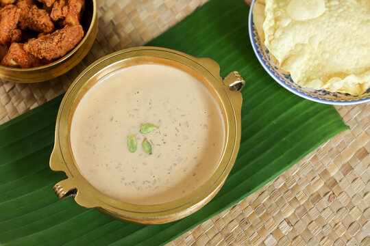

Paalada Payasam

Description
Paalada Payasam is a traditional Kerala dessert. It is often served during festivals and special occasions.
Ingredients
- 1 cup rice flour
- 1 cup jaggery, grated
- 4 cups coconut milk
- 1/2 tsp cardamom powder
- Cashews and raisins for garnishing
Steps
- Mix rice flour with water to form a smooth batter.
- Steam the batter in banana leaves to make thin pancakes (pala).
- In a pan, melt jaggery with a little water to make a syrup.
- Add coconut milk and cardamom powder to the syrup.
- Layer the steamed pancakes in the syrup and cook for a few minutes.
- Garnish with fried cashews and raisins before serving.
g
Home